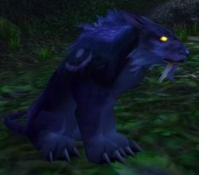

Kerandhil
Age : Jeune
Sexe : Homme
Race : Elfe
Faction : Alliance
Formation : Druide
Description : Une enfance banale, des parents absents, un endoctrinage massif, une aventure qui changea sa vie. Loin des théories philosophiques, loin du fanatisme Elunien, il est des expériences qui ouvrent d'autres voies. On peut s'y plonger, ou y être plonger.
Des événements troublants, déchirants... ils se cumulent et nous affaiblissent, sans que l'on se rend compte, ils laissent des cicatrices. Verser au coeur des ténèbres, goûter au néant, l'approcher tellement qu'on peut en partager un peu de son essence, au prix d'y laisser un peu de la sienne...
Sera-t-il un jour possible pour Kerandhil de redevenir le jeune ambitieux qu'il était ? Affublé par tous ses masques, tous ses mensonges, tous ces rêves futiles tellement apaisants ? Pourra-t-il aller.... contre sa nature ?
Plus d'infos sur Kerandhil >>>Lire les 5 récits de Kerandhil >>>